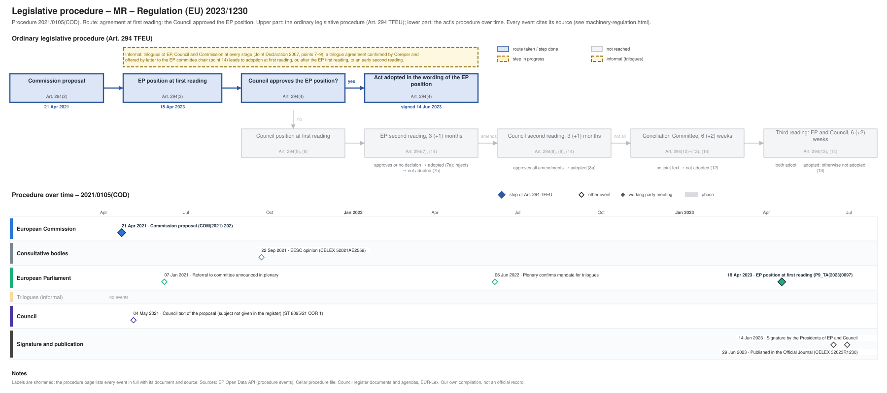

← Regulation timeline › MR › Legislative procedure · All procedures
Procedure 2021/0105(COD), completed. Drawing: SVG · PNG · PDF (A3) · draw.io · Page as Markdown: machinery-regulation.md
| Stage | Completed, published 29 Jun 2023 |
|---|---|
| Route (Art. 294 TFEU) | Agreement at first reading: the Council approved the EP position |
| Latest activity | 29 Jun 2023 · Signature and publication: Published in the Official Journal (CELEX 32023R1230) |

| Date | Actor | Event | Document | Source |
|---|---|---|---|---|
| 2021-04-21 | European Commission | Commission proposal (Art. 294(2) TFEU) | COM(2021) 202 | Cellar procedure file 2021/105 (CELEX 52021PC0202) |
| 2021-05-04 | Council | Council text of the proposal (subject not given in the register) | ST 8095/21 COR 1 | Cellar procedure file 2021/105 (Council register) |
| 2021-06-07 | European Parliament | Referral to committee announced in plenary | EP procedure file | EP Open Data API, procedure 2021-0105 (REFERRAL) |
| 2021-09-22 | Consultative bodies | EESC opinion | CELEX 52021AE2559 | Cellar procedure file 2021/105 |
| 2022-06-06 | European Parliament | Plenary confirms mandate for trilogues | EP procedure file | EP Open Data API, procedure 2021-0105 (PLENARY_ENDORSE_COMMITTEE_INTERINSTITUTIONAL_NEGOTIATIONS) |
| 2023-04-18 | European Parliament | EP position at first reading (Art. 294(3) TFEU) | P9_TA(2023)0097 | EP Open Data API, procedure 2021-0105 (PLENARY_ADOPT_POSITION) |
| 2023-06-14 | Signature and publication | Signature by the Presidents of EP and Council | EP procedure file | EP Open Data API, procedure 2021-0105 (SIGNATURE) |
| 2023-06-29 | Signature and publication | Published in the Official Journal | CELEX 32023R1230 · en.md de.md | EP Open Data API, procedure 2021-0105 (PUBLICATION_OFFICIAL_JOURNAL) |
Every document the Council register, the EU database of the Parliament of Austria or the EP lists for the procedure, with its state: public documents link to the official file; documents that are not public link to their entry in the Austrian database where there is one (metadata only). Status: public; not public; not public, leak available (an unofficial copy is known to circulate outside the institutions; it is neither published nor quoted here). Released: when a document listed as not public was released, by the date of the Council's public PDF (a technical date) or else the day our daily check found it public.
| Date | Document | Kind | Subject | Status | Released | Text |
|---|---|---|---|---|---|---|
| 2021-04-23 | ST 8095/21 | council-transmission | Proposal for a REGULATION OF THE EUROPEAN PARLIAMENT AND OF THE COUNCIL on machinery products | public status unknown | – | – |
| 2021-04-23 | ST 8095/21 ADD 1 | council-transmission | ANNEXES to the Proposal for a Regulation of the European Parliament and of the Council on machinery products | public status unknown | – | – |
| 2021-05-03 | ST 8095/21 ADD 2 | council-transmission | REGULATORY SCRUTINY BOARD OPINION Proposal for a Regulation of the European Parliament and of the Council on machinery products | public status unknown | – | – |
| 2021-05-03 | ST 8095/21 ADD 3 | council-transmission | COMMISSION STAFF WORKING DOCUMENT IMPACT ASSESSMENT Accompanying the Proposal for a Regulation of the European Parliament and of the Council on machinery … | public status unknown | – | – |
| 2021-05-03 | ST 8095/21 ADD 4 | council-transmission | COMMISSION STAFF WORKING DOCUMENT EXECUTIVE SUMMARY OF THE IMPACT ASSESSMENT REPORT Accompanying the Proposal for a Regulation of the European Parliament and … | public status unknown | – | – |
| 2021-05-04 | ST 8095/21 COR 1 | council-text | Proposal for a REGULATION OF THE EUROPEAN PARLIAMENT AND OF THE COUNCIL on machinery products | public | – | – |
| 2021-06-15 | ST 9833/21 | council-transmission | Opinion on the application of the Principles of Subsidiarity and Proportionality | public status unknown | – | – |
| 2021-08-31 | ST 10525/21 | council-note | List of working papers (WK) distributed in the Working Party on Technical Harmonisation (Machinery) in the second quarter of 2021 | public status unknown | – | – |
| 2021-09-22 | CELEX 52021AE2559 | opinion | Opinion of the European Economic and Social Committee on ‘Proposal for a Regulation of the European Parliament and of the Council on machinery products’ … | public | – | – |
| 2021-11-12 | ST 13569/21 | council-note | Regulation on Machinery Products - Progress Report from the Presidency on the state of play | public status unknown | – | – |
| 2021-11-18 | ST 13569/21 REV 1 | council-note | Regulation on Machinery Products - Progress Report from the Presidency on the state of play | public status unknown | – | – |
| 2022-03-01 | ST 6724/22 | council-note | List of working papers (WK) distributed in the Working Party on Technical Harmonisation (Machinery) in the fourth quarter of 2021 | public status unknown | – | – |
| 2022-05-05 | A9-0141/2022 | ep-report | REPORT on the proposal for a regulation of the European Parliament and of the Council on Machinery products | public | – | – |
| 2022-06-24 | ST 9801/22 REV 1 COR 1 | council-text | not public* | – | – | |
| 2022-07-29 | ST 11407/22 | council-note | List of working papers (WK) distributed in the Working Party on Technical Harmonisation (Machinery) in the first and second quarter of 2022 | public status unknown | – | – |
| 2023-01-26 | ST 5617/23 | council-note | Letter to the Chair of the European Parliament IMCO Committee | public status unknown | – | – |
| 2023-03-22 | ST 7740/23 | council-note | List of working papers (WK) distributed to the Working Party on Technical Harmonisation (Machinery) in the third and the fourth quarter of 2022 | public status unknown | – | – |
| 2023-04-18 | P9_TA(2023)0097 | ep-position | Machinery | public | – | – |
| 2023-04-21 | ST 8293/23 | council-note | Outcome of the European Parliament's first reading (Strasbourg, 17 to 20 April 2023) | public status unknown | – | – |
| 2023-05-10 | PE 6/23 | council-note | REGULATION OF THE EUROPEAN PARLIAMENT AND OF THE COUNCIL on machinery | public status unknown | – | – |
| 2023-05-15 | ST 8698/23 | council-note | Draft REGULATION OF THE EUROPEAN PARLIAMENT AND OF THE COUNCIL on machinery (first reading) - Adoption of the legislative act | public status unknown | – | – |
| 2023-05-15 | ST 8698/23 ADD 1 | council-note | Draft REGULATION OF THE EUROPEAN PARLIAMENT AND OF THE COUNCIL on machinery (first reading) - Adoption of the legislative act = Statement | public status unknown | – | – |
| 2023-05-31 | ST 10004/23 | council-note | Voting result Regulation of the European Parliament and of the Council on machinery products Adoption of the legislative act 3949th meeting of the COUNCIL OF … | public status unknown | – | – |
| 2023-06-14 | PE 6/23 REV 1 | council-note | REGULATION OF THE EUROPEAN PARLIAMENT AND OF THE COUNCIL ON MACHINERY AND REPEALING DIRECTIVE 2006/42/EC OF THE EUROPEAN PARLIAMENT AND OF THE COUNCIL AND … | public status unknown | – | – |
* Not public: the registers are checked again daily until the document is released; last check 2026-10-07.
Unofficial Markdown conversions for reading, searching and project folders; only the official document is authentic. "Read" opens the rendered text on GitHub, where a link to a provision (#art-13, #rec-12, #annex-i) jumps to it.
| Date | Stage | Document | Markdown | Read |
|---|---|---|---|---|
| 2023-06-29 | oj | CELEX 32023R1230 | en de | GitHub |
| 2023-07-04 | corrigendum | CELEX 32023R1230R(01) | en de | GitHub |
| 2025-04-01 | corrigendum | CELEX 32023R1230R(03) | de | GitHub |
Standardisation requests (Art. 10 of Regulation (EU) No 1025/2012) ask CEN, CENELEC and ETSI to draft harmonised standards in support of the act; standards cited in the Official Journal give a presumption of conformity. Planned requests come from the Commission's annual Union work programmes for European standardisation (Art. 8), which are plans, not decisions. Deadlines as set in the request's annexes (hand-checked).
COMMISSION IMPLEMENTING DECISION of 20.1.2025 on a standardisation request to the European Committee for Standardization and to the European Committee for Electrotechnical Standardization as regards machinery and related products in support of Regulation (EU) 2023/1230 of the European Parliament and of the Council
adopted 2025-01-20; expires 2035-01-20; ESOs: CEN, CENELEC. eNorm · decision and annexes · en.md · de.md
| Item | Standard(s) requested | Kind | Deadline | Phase 2 |
|---|---|---|---|---|
| T1-1 | Standards and deliverables on horizontal matters of risk reduction and safety of machinery products, namely: standardisation of general principles; laying down terminology and methodology to be applied, covering the associated risks of emerging technologies and new innovative product categories that are not covered by existing or potential harmonised standards; ensuring, as appropriate, the protection of operators and other persons with a broad degree of anthropometric characteristics, the environment, domestic animals and biodiversity; provisions identifying and informing on essential skills and competences necessary for the safe operation of the machinery products and services, and those necessary for the correct execution of the conformity assessment procedure | new | 2026-01-20 | 2034-01-20 |
| T1-2 | Standards and deliverables covering various or unique product categories introducing specific provisions for machinery products … | new | 2026-01-20 | 2034-01-20 |
| T1-3 | Standards and deliverables covering various or unique product categories introducing specific provisions ensuring that safety functions based on inter alia external connections, software or data are protected against corruption in case of accidental and intentional events, over the product lifetime | new | 2026-01-20 | 2034-01-20 |
| T1-4 | Standards and deliverables covering various or unique product categories introducing specific provisions for autonomous mobile machinery products, with or without supervisory function | new | 2026-01-20 | 2034-01-20 |
| T1-5 | Standards and deliverables introducing specific provisions for product categories covered by the domains listed in Table 2 to this Annex that were not yet addressed in the existing harmonised standards | new | – | 2034-01-20 |
| T2-1 | Standards and deliverables on horizontal matters of risk reduction and safety of machinery products, namely: standardisation of general principles; laying down terminology and methodology to be applied for existing and new innovative product categories, covering the associated risks of electrotechnical aspects; guards and protective devices; conventional and emerging technologies; predictive maintenance; ensuring, as appropriate, the health and safety of persons, in particular consumers and professional users with a broad degree of anthropometric characteristics, the environment, domestic animals and biodiversity; provisions identifying and informing on essential skills and competences necessary for the safe operation of the machinery products, and those necessary for the correct execution of the conformity assessment procedure | revision | 2026-01-20 | 2034-01-20 |
| T2-2 | Standards and deliverables in the field of automation systems and technologies and their application and integration covering design, sourcing, manufacturing and delivery, support, maintenance and disposal of products | revision | 2026-01-20 | 2034-01-20 |
| T2-3 | Standards and deliverables covering various or unique product categories revising, amending and supplementing provisions for machinery products … | revision | 2026-01-20 | 2034-01-20 |
| T2-4 | Standards and deliverables covering various or unique product categories revising, amending and supplementing provisions with specific prescriptions ensuring that safety functions based on inter alia external connections, software or data are protected against corruption in case of accidental or intentional events, over the product lifetime | revision | 2026-01-20 | 2034-01-20 |
| T2-5 | Standards and deliverables covering various or unique product categories revising, amending and supplementing with provisions specific to autonomous mobile machinery products, with or without supervisory function | revision | 2026-01-20 | 2034-01-20 |
| T2-6 | Standards and deliverables in the field of ergonomics and human factors, namely … | revision | 2026-01-20 | 2034-01-20 |
| T2-7 | Standards and deliverables in the field of acoustics, including methods of measuring acoustical phenomena, and methods of noise reduction | revision | 2026-01-20 | 2034-01-20 |
| T2-8 | Standards and deliverables on safety and hygiene of machinery for use with foodstuffs and feed | revision | 2026-01-20 | 2034-01-20 |
| T2-9 | Standards and deliverables on safety and hygiene of machinery for pharmaceutical products and cosmetics | revision | 2026-01-20 | 2034-01-20 |
| T2-10 | Standards and deliverables on potentially explosive atmospheres: explosion prevention and protection | revision | 2026-01-20 | 2034-01-20 |
| T2-11 | Standards and deliverables on electrical apparatus for potentially explosive atmospheres | revision | 2026-01-20 | 2034-01-20 |
| T2-12 | Standards and deliverables on safety of measuring, control, and laboratory equipment | revision | 2026-01-20 | 2034-01-20 |
| T2-13 | Standards and deliverables on aspects of machinery related to aspects of medical devices | revision | 2026-01-20 | 2034-01-20 |
| T2-14 | Standards and deliverables on safety requirements of equipment for making and shaping of metals | revision | 2026-01-20 | 2034-01-20 |
| T2-15 | Standards and deliverables on robotics, including robots for collaborative applications, service robots and wearable exoskeletons robots, including provisions for safety functions governed by fully or partially selfevolving behaviour using machine learning approaches | revision | 2026-01-20 | 2034-01-20 |
| T2-16 | Standards and deliverables on safety aspects of non-road mobile machinery, including automated and remote operation, as well as the methodology for measuring nominal power delivery | revision | 2026-01-20 | 2034-01-20 |
| T2-17 | Standards and deliverables on safety aspects of … | revision | 2026-01-20 | 2034-01-20 |
| T2-18 | Standards and deliverables on safety aspects of specialised mining machinery and equipment for opencast mining (e.g. conveyors, high wall miners, rock drill rigs and continuous surface miners); underground mining machinery and equipment for the extraction of solid mineral substances (e.g. road headers, continuous miners, rock drill rigs, raise boring machines, shaft boring machines, mining auger boring machines, high wall miners, load-haul dumper, special refuge/rescue chambers as well as machinery and equipment for underground mine development); other machinery primarily designed for use outside mines but also intended for use underground; utility and support machines for underground use | revision | 2026-01-20 | 2034-01-20 |
| T2-19 | Standards and deliverables on safety of crushing and screening machinery such as biomass screening machinery (e.g. woodchip and sawdust screens); waste recycling screening machinery (e.g. screens for recycled materials, excluding mineral and mining applications); biomass shredders/crushers (e.g. main or oversize crusher for biomass plant); waste shredders/crushers (e.g. shredders/crushers for recycled materials, excluding mineral and mining applications) | revision | 2026-01-20 | 2034-01-20 |
| T2-20 | Standards and deliverables on safety aspects for electric motor-operated hand-held and transportable tools and electrical appliances for household and similar purposes | revision | 2026-01-20 | 2034-01-20 |
| T2-21 | Standards and deliverables on safety aspects for machinery products used in the agriculture, horticulture, gardening and forestry | revision | 2026-01-20 | 2034-01-20 |
| T2-22 | Standards and deliverables on control and safety requirements for design, calculation, stability criteria for the construction, installation, security systems, maintenance and verification, as far as applicable, for: lifting devices; lifting platforms and mobile machines with one or more mobile elevating work platforms for the lifting of persons, which can be equipped with interchangeable equipment designed for handling of goods; lifting appliances (installed temporarily or permanently) such as cranes, power driven winches and hoists, and hand powered lifting machines for goods lifting and/or the lifting of persons; load manipulating devices; lifting accessories, such as non-fixed load lifting attachments, slings, shackles, eyebolts; lifting media for slings and lifting appliances, such as welded round steel link chains, steel wire ropes, textile ropes and webbing; continuous handling equipment; systems for unit loads and bulk materials; equipment and systems for pneumatic handling of bulk materials; as well as equipment for the storage of bulk materials | revision | 2026-01-20 | 2034-01-20 |
| T2-23 | Standards and deliverables for design, calculation, stability criteria for the construction, installation, maintenance and verification as well as control, safety and security systems for: lifts including service lifts, lifting appliances and lifting tables moving between fixed floors, carrying goods or passengers, installed temporarily or permanently; escalators, moving walks and passenger conveyors; and stairlifts | revision | 2026-01-20 | 2034-01-20 |
| T2-24 | Standards and deliverables for methods of test and specifications for conveyor and elevator belting and the preparation of practice codes, recommendations and specifications for the jointing, installation, safety, storage and transport of such belting. | revision | 2026-01-20 | 2034-01-20 |
| T2-25 | Standards and deliverables on machines used in drilling (e.g. well construction), production (i.e., production of hydrocarbons from a well) and processing of gas and liquid and gaseous hydrocarbons (i.e. refining crude oil and gas into commercial products) within the petroleum, petrochemical and natural gas industries | revision | 2026-01-20 | 2034-01-20 |
| T2-26 | Standards and deliverables on safety of power-operated windows, rooflights, roof hatches, doorsets, blinds and shutters, industrial/commercial garage doors and gates, pedestrian entrance control equipment and related safety devices | revision | 2026-01-20 | 2034-01-20 |
| T2-27 | Standards and deliverables on safety, for the design, construction, installation, testing, operation, maintenance, repair and disposal of refrigerating systems used for cooling and/or heating | revision | 2026-01-20 | 2034-01-20 |
| T2-28 | Standards and deliverables in the field of welding by all processes, as well as allied processes, covering the terminology, definitions and the symbolic representation of welds on drawings, equipment for welding, raw materials (gas, parent and filler metals) welding processes and rules, inspection, testing and quality control, design and qualification of welding personnel, as well as safety and health. | revision | 2026-01-20 | 2034-01-20 |
| T2-29 | Standards and deliverables of systems and components and their use in the fields of lasers and photonics | revision | 2026-01-20 | 2034-01-20 |
| T2-30 | Standards and deliverables on optical radiation safety and laser equipment | revision | 2026-01-20 | 2034-01-20 |
| T2-31 | Standards and deliverables of specific items of sports, playground and other recreational facilities and equipment with a special regard to terminology, safety requirements, operational requirements, service requirements, performance requirements, test methods, marking, consumer/user information, installation and maintenance | revision | 2026-01-20 | 2034-01-20 |
| T2-32 | Standards and deliverables on the design and manufacture in the field of safety of machines and tools for the processing of wood and similar materials and also of facilities and equipment for conditioning of wood | revision | 2026-01-20 | 2034-01-20 |
| T2-33 | Standards and deliverables on the safety of machine tools, their accessories and tools designed to form and to machine cold metal both with and without the removal of metal | revision | 2026-01-20 | 2034-01-20 |
| T2-34 | Standards and deliverables on safety of machines used for the preparation and processing of plastics and rubber | revision | 2026-01-20 | 2034-01-20 |
| T2-35 | Standards and deliverables on safety of machines and equipment used to prepare, not including the manufacture of packaging materials itself, to fill, to close, to assemble and to package containers of solids, liquids, powders and gases | revision | 2026-01-20 | 2034-01-20 |
| T2-36 | Standards and deliverables on safety of self-propelled and pedestrian-propelled industrial and rough-terrain trucks, including lift trucks, tractors, burden and personnel carriers, variable-reach trucks, straddle carriers, driverless trucks, platform trucks and trailers, as well as their components and attachments, and also safety of power-operated warehouse equipment | revision | 2026-01-20 | 2034-01-20 |
| T2-37 | Standards and deliverables on integral lighting of machinery | revision | 2026-01-20 | 2034-01-20 |
| T2-38 | Standards and deliverables in the field of waste management, including public cleaning, taking into account technical and logistical aspects, covering in particular provisions for products and procedures including safety requirements for the collection, transport, storage and transfer of solid and liquid waste | revision | 2026-01-20 | 2034-01-20 |
| T2-39 | Standards and deliverables in the field of safety of equipment for industrial thermoprocessing equipment, inter alia industrial furnaces or kilns and other industrial heating equipment | revision | 2026-01-20 | 2034-01-20 |
| T2-40 | Standards and deliverables of equipment and vehicles for rescue and firefighting, including automated and remote operation | revision | 2026-01-20 | 2034-01-20 |
| T2-41 | Standards and deliverables on compressors and vacuum pumps | revision | 2026-01-20 | 2034-01-20 |
| T2-42 | Standards and deliverables on Pumps | revision | 2026-01-20 | 2034-01-20 |
| T2-43 | Standards and deliverables on safety of machinery and equipment used for paper making, paper finishing, prepress, printing, post-press, print finishing, book binding, paper converting, including machinery for the manufacture and processing of corrugated board, cardboard and tissue; machinery for paper making and paper finishing; machinery for the preparation of raw materials; debarkers and their conveyors; wood grinders; plants for the production of pulp; de-wiring machines for bales and units; pulpers and their loading facilities; stock preparation machinery; digesters; thickeners; wire belt presses; sorters; beaters, chests; disintegrators and refiners; reel slitter; paper, board and cardboard making machines; tissue making machines; fibre board machines; coating machines; winder slitters and rereelers; plying machines; sheet-cutters; calenders in paper making; roll packaging machines as well as logistics and transport equipment in paper production and paper finishing | revision | 2026-01-20 | 2034-01-20 |
| T2-44 | Standards and deliverables in the field of safety of tannery machinery | revision | 2026-01-20 | 2034-01-20 |
| T2-45 | Standards and deliverables in the field of safety of manufacturing machinery leather and imitation leather goods and footwear | revision | 2026-01-20 | 2034-01-20 |
| T2-46 | European standardisation deliverables on textile machinery and accessories | revision | 2026-01-20 | 2034-01-20 |
| T2-47 | Standards and deliverables in the field of safety for machines and plants used in foundries for the production of castings in disposable and permanent moulds including shot blasting systems | revision | 2026-01-20 | 2034-01-20 |
| T2-48 | Standards and deliverables on health and safety in the field of furniture, including electrically operated furniture, covering test methods and requirements for end products, parts, components, surfaces, surface finishes and furniture hardware, as well as terminology and dimensioning | revision | 2026-01-20 | 2034-01-20 |
| T2-49 | Standards and deliverables of hand-held machines, using propulsive charges including safety requirements for the design, construction and use of cartridge operated tools, including fixing and hard-marking tools | revision | 2026-01-20 | 2034-01-20 |
| T2-50 | Standards and deliverables in the field of mechanical vibration and shock, including: methods for measuring and evaluating mechanical vibration and shock of machinery; methods for assessing human exposure to mechanical vibration and shock from machinery use; methods for reducing risks from exposure to mechanical vibration and shock from the design of machinery, including vibration isolation | revision | 2026-01-20 | 2034-01-20 |
| T2-51 | Standards and deliverables in the field of safety of non- electric hand-held power tools (including their use when mounted in fixtures) which can be both in one generic standard for aspects common to several types of tools, and standards for specific types of tools | revision | 2026-01-20 | 2034-01-20 |
| T2-52 | Standards and deliverables on all applications for all rail systems, in the field of heavy rail and urban rail (except electrical and electronic subjects) specifically intended for vehicles and fixed installations | revision | 2026-01-20 | 2034-01-20 |
| T2-53 | Standards and deliverables in the field of reciprocating and rotary displacement internal combustion engines, including definitions, performance/tests, nominal power delivery and special requirements, taking into account the relationship between engine and driven machinery and environment | revision | 2026-01-20 | 2034-01-20 |
| T2-54 | Standards and deliverables in the field of non-internal combustion engine or hybrid propulsion systems, including definitions, performance/tests, nominal power delivery and special requirements, taking into account the relationship between propulsion system and driven machinery and environment | revision | 2026-01-20 | 2034-01-20 |
| T2-55 | Standards and deliverables on the safety for the design and construction of machinery and installations used for surface treatment, covering the application of organic coating materials (paints, varnishes, adhesives and similar products) including cleaning and pre-treatment machines, application equipment, coating material supply systems, coating plants, dryers for organic coatings and thermal waste gas treatment systems, application of metal coatings (plating, electroplating), surface treatment by means of anodizing, and surface treatment by means of plasma processes (e.g. PVD, CVD, plasma nitriding, plasma activation) | revision | 2026-01-20 | 2034-01-20 |
| T2-56 | Standards and deliverables in the field of safety, function and performance requirements applicable to | revision | 2026-01-20 | 2034-01-20 |
| T2-57 | Standards and deliverables in the field of safety requirements for roller brake testers and machines for mounting and demounting of vehicle tyres, applicable for road vehicles | revision | 2026-01-20 | 2034-01-20 |
| T2-58 | European standardisation deliverables of safety requirements and all other aspects for centrifuges having a kinetic energy of rotation of at least 200 Nm | revision | 2026-01-20 | 2034-01-20 |
| T2-59 | Standards and deliverables in the field of cycles, their components and accessories with particular reference to requirements for safety, testing methods and terminology | revision | 2026-01-20 | 2034-01-20 |
| T2-60 | Standards and deliverables on the safety, testing and performance requirements covering self-propelled vehicles and personal mobility devices that are not subject to EU type-approval | revision | 2026-01-20 | 2034-01-20 |
| T2-61 | Standards and deliverables of equipment for storage tanks and filling stations, including dispensers and submersible pumps | revision | 2026-01-20 | 2034-01-20 |
| T2-62 | Standards and deliverables on safety requirements of baling presses | revision | 2026-01-20 | 2034-01-20 |
| T2-63 | Standards and deliverables on safety of side curtain ventilation systems | revision | 2026-01-20 | 2034-01-20 |
| T2-64 | Standards and deliverables on turbines | revision | 2026-01-20 | 2034-01-20 |
| T2-65 | Standards and deliverables on sewing machines | revision | 2026-01-20 | 2034-01-20 |
| T2-66 | Standards and deliverables in the field of industrial equipment and installations intended for electroheating, electromagnetic processing of materials and electroheat based treatment technologies | revision | 2026-01-20 | 2034-01-20 |
| T2-67 | Standards and deliverables on safety of electrostatic painting and finishing equipment | revision | 2026-01-20 | 2034-01-20 |
| T2-68 | Standards and deliverables related to power electronics: equipment, their component parts, in particular electronic devices, and their extension to the system aspect | revision | 2026-01-20 | 2034-01-20 |
| T2-69 | Standards and deliverables on safety of automatic electrical controls, in particular electrical actuators and equipment for water house-hold application | revision | 2026-01-20 | 2034-01-20 |
| T2-70 | Standards and deliverables on equipment and tools for live working, i.e. work on or near live electrical systems or installations | revision | 2026-01-20 | 2034-01-20 |
| T2-71 | Standards and deliverables on additive manufacturing and additive manufacturing relevant equipment, including … | revision | 2026-01-20 | 2034-01-20 |
| T2-72 | Standards and deliverables on additive manufacturing supporting equipment related to aspects of security defence and space utilisation | revision | 2026-01-20 | 2034-01-20 |
| T2-73 | Standards and deliverables on the design, manufacture and testing of entertainment technology equipment such as machinery, machinery installations, control systems, trusses, truss lifts, as well as devices, items and accessories for live events and broadcast applications | revision | 2026-01-20 | 2034-01-20 |
| T2-74 | Standards and deliverables on forced draught burners | revision | 2026-01-20 | 2034-01-20 |
| T2-75 | Standards and deliverables on mobile machinery products, including … | revision | 2026-01-20 | 2034-01-20 |
Source: Annex I to Commission Implementing Decision C(2025)129 (M/605), Table 1 (new, T1) and Table 2 (revised, T2); phase 1 = deadline, phase 2 = deadline_phase_2.
| Year | Action (open for its text) |
|---|---|
| 2024 | 61. Machinery products
Work programme 2024, Annex, Action 61: en.md · de.md · original on EUR-Lex ↗ |
| 2025 | 68. Anthropometric considerations for machinery safety
Work programme 2025, Annex, Action 68: en.md · de.md · original on EUR-Lex ↗ |
| 2026 | 34. Anthropometric considerations for personal protective equipment
Work programme 2026, Annex, Action 34: en.md · de.md · original on EUR-Lex ↗ |
Other actions of the work programmes that ask for coordination with this act: 2026, Action 35: Lifts and safety components for lifts.
Projects of CEN, CENELEC and ETSI for the act, from their public work programmes: status, date of the current stage and the next one, and for CEN-CENELEC the forecasted date of the formal vote. Drafts of harmonised standards are not public; only the citation of a standard's reference in the Official Journal gives a presumption of conformity.
| Body | Project | Title | Status | Next step | Vote (forecast) | Request |
|---|---|---|---|---|---|---|
| CEN/TC 114 | prEN ISO 11161 WI 00114191 | Safety of machinery - Integration of machinery into a system - Basic requirements (ISO/DIS 11161:2024) | Under Approval (2024-10-21) | next stage (2025-06-23) | 2025-06-23 | M/396, M/605 |
| CEN/TC 114 | prEN ISO 12100 WI 00114190 | Safety of machinery - General principles for design - Risk assessment and risk reduction (ISO/DIS 12100:2026) | Under Approval (2026-09-15) | next stage (2027-05-17) | 2027-05-17 | M/396, M/605 |
| CEN/TC 114 | prEN ISO 12895 WI 00114186 | Safety of machinery - Identification of whole body access and prevention of associated risk(s) (ISO/DIS 12895:2025) | Under Approval (2025-11-20) | next stage (2026-01-22) | 2025-11-20 | M/396, M/605 |
| CEN/TC 114 | prEN ISO 13849-2 WI 00114187 | Safety of machinery - Safety-related parts of control systems - Part 2: Validation (ISO/DIS 13849-2:2026) | Under Approval (2026-05-01) | next stage (2027-01-04) | 2027-01-04 | M/396, M/605 |
| CEN/TC 114 | prEN ISO 13857 rev WI 00114194 | Safety of machinery — Distances associated with the position of protective structures to prevent reaching by upper and lower limbs | Under Drafting (2026-09-15) | next stage (2027-03-15) | 2028-10-09 | M/605 |
| CEN/TC 114 | prEN ISO 14122 rev WI 00114188 | Safety of machinery — Permanent means of access to machinery — Part 1: Choice of fixed means of access between two levels | Under Drafting (2023-12-04) | next stage (2024-06-04) | 2026-01-02 | M/605 |
| CEN/TC 114 | prEN ISO 14159 WI 00114189 | Safety of machinery - General requirements for hygienic design (ISO/DIS 14159:2026) | Under Approval (2026-10-01) | next stage (2027-06-01) | 2027-06-01 | M/605 |
| CEN/TC 114 | prEN ISO 20607 WI 00114192 | Safety of machinery - Instruction handbook - General drafting principles (ISO/DIS 20607:2025) | Under Approval (2025-05-02) | next stage (2026-01-02) | 2026-01-02 | M/396, M/605 |
| CLC/TC 44X | EN IEC 60204-32:2025/prAA | SAFETY OF MACHINERY – ELECTRICAL EQUIPMENT OF MACHINES – Part 32: Requirements for hoisting machines | Under Drafting (2026-06-10) | next stage (2026-10-12) | 2028-03-21 | M/511, M/605 |
| CLC/TC 44X | FprEN 50742:2026 | Safety of machinery - Protection against corruption | Under Approval (2026-09-11) | next stage (2026-10-09) | 2026-09-02 | M/605 |
| CLC/TC 44X | prEN IEC 60204-1 | Safety of machinery - Electrical equipment of machines - Part 1: General requirements | Under Drafting (2026-01-22) | next stage (2026-07-22) | 2027-08-23 | M/396, M/511, M/605 |
| CLC/TC 44X | prEN IEC 62745:2025 | Safety of machinery - Requirements for cableless control systems of machinery | Under Approval (2026-02-20) | next stage (2026-10-20) | 2026-10-20 | M/396, M/511, M/605 |
Sources: CEN/TC 114; CLC/TC 44X.
Comitology committees of Member State representatives give opinions on draft implementing acts (Regulation (EU) No 182/2011); expert groups advise the Commission on delegated acts, guidance and implementation; groups set up by an act itself (e.g. the NIS Cooperation Group) bring together the Member States, the Commission and agencies. Meetings and documents as published in the Comitology Register, the Register of Commission expert groups and on the Commission's pages of these groups, from 2024 on.
Comitology committee C128700, GROW; advisory procedure (Art. 4 of Regulation (EU) No 182/2011); examination procedure (Art. 5, 6 and 7 of Regulation (EU) No 182/2011). Official source: Comitology Register ↗
| Date | Meeting | Documents |
|---|---|---|
| 2024-06-27 | Machinery Committee | agenda · draft implementing act · voting sheet · summary record · other document |
Expert group E03676, GROW. Official source: Register of Commission expert groups ↗
| Date | Meeting | Documents |
|---|---|---|
| 2026-10-22 | Commission Expert Group on MACHINERY | agenda |
| 2026-10-22 | COM Expert Group on Machinery | agenda |
| 2026-04-27 | COM Expert Group on Machinery | agenda |
| 2025-11-07 | 9th meeting of the COM Expert Group on Machinery | agenda |
| 2025-04-11 | 8th meeting of the COM Expert Group on Machinery | agenda · minutes · list of participants |
| 2024-10-17 | 7th meeting of the COM Expert Group on Machinery | agenda · minutes · list of participants |
| 2024-04-12 | 6th meeting of the COM Expert Group on Machinery | agenda · agenda · minutes · list of participants |